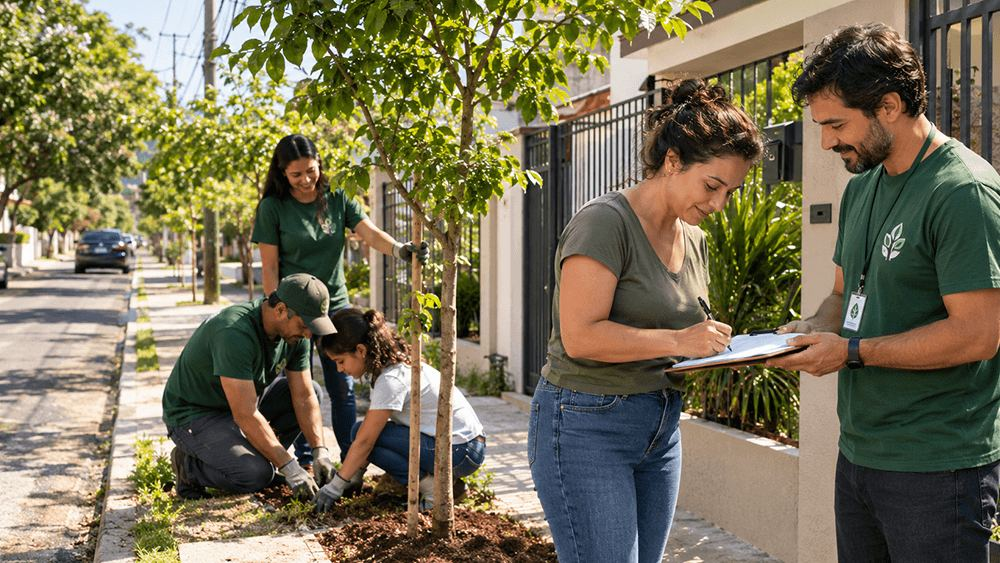
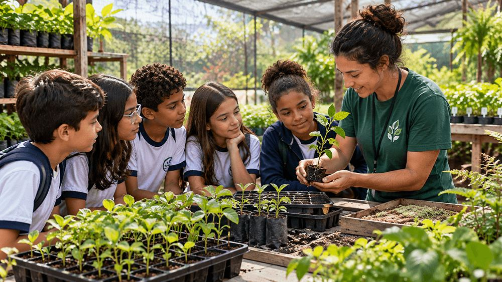
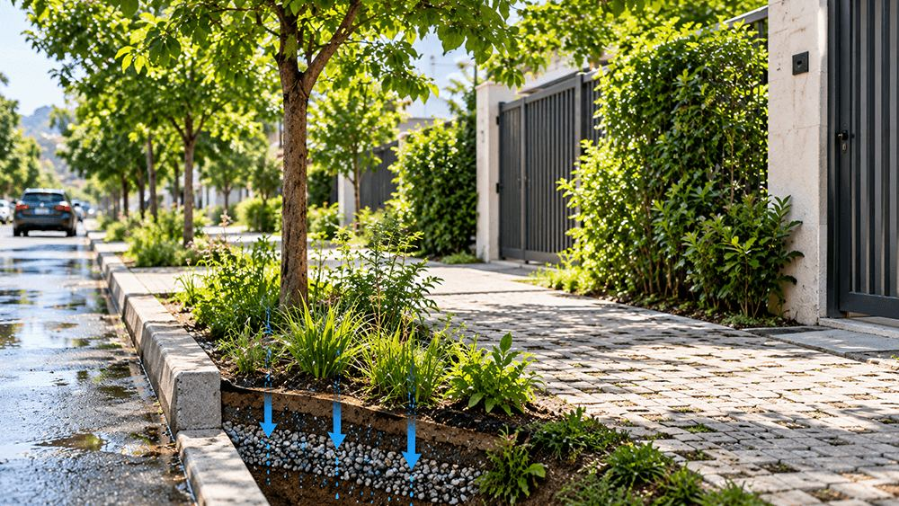
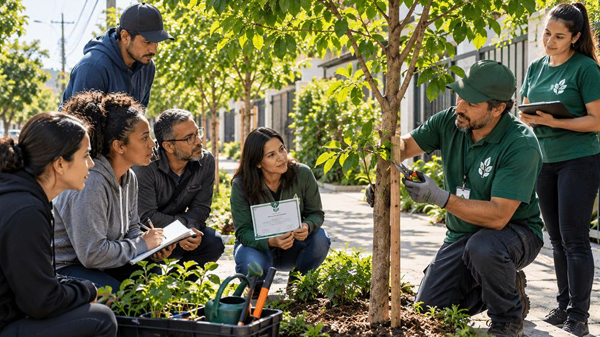

Quatro frentes de trabalho em bairros com pouca cobertura arbórea
O que financiamos
Cada projeto abaixo tem orçamento, meta e prestação de contas próprios. Os
relatórios trimestrais ficam disponíveis no portal da transparência do instituto.
Projetos em andamento
Rua Arborizada
Em andamento
Plantio

Rua Tuiuti, Tatuapé, depois de dois anos de plantio.
Plantio de árvores de porte médio em calçadas residenciais, com escolha de
espécies compatível com a fiação elétrica e a largura do passeio. Cada morador
assina um termo de cuidado da muda em frente à sua casa.
Início
Meta anual
1.200 mudas
Bairros
Tatuapé, Vila Formosa, Carrão
Viveiro Escola
Em andamento
Educação ambiental

Viveiro mantido junto à EMEF Mário de Andrade.
Estudantes do ensino fundamental acompanham a semente até a muda pronta para
plantio. O viveiro produz espécies nativas da Mata Atlântica e abastece todos os
demais projetos do instituto.
Início
Meta anual
4.000 mudas
Escolas parceiras
7
Calçada Fresca
Em andamento
Drenagem

Piso drenante instalado na Rua Serra de Bragança.
Substituição de concreto por piso drenante e abertura de canteiros no meio-fio.
A água da chuva volta ao solo em vez de sobrecarregar a galeria, e a temperatura
da calçada cai em média 6 °C nos dias de verão.
Início
Meta anual
3 km de calçada
Parceria
Subprefeitura da Mooca
Cuidadores da Quadra
Em andamento
Formação

Oficina de poda aberta à comunidade, realizada aos sábados.
Formação gratuita de moradores em poda, rega, identificação de pragas e denúncia
de supressão irregular. Quem conclui o curso recebe certificado e passa a ser
referência técnica da própria quadra.
Início
Meta anual
240 pessoas formadas
Carga horária
16 horas
Como doar
A doação é mensal e pode ser destinada a um projeto específico ou distribuída
entre todos. O valor é definido por você no formulário de cadastro.
O que cada valor cobre
R$ 25
Adubo e manutenção de uma muda por um ano
R$ 45
Uma muda, o berço de plantio e dois anos de acompanhamento
R$ 120
Um metro de calçada drenante
Prestação de contas
O recibo é emitido em até cinco dias úteis e o relatório financeiro é publicado
a cada trimestre, com a lista de ruas atendidas no período.
Como ser voluntário
Não é preciso experiência prévia. Toda função tem treinamento no próprio dia e
acompanhamento de um cuidador já formado.
Frentes abertas
Plantio nos mutirões de sábado, das 8h às 12h.
Rega e manutenção durante a semana, em escala combinada.
Apoio no viveiro escola, às quartas e sextas pela manhã.
Comunicação, fotografia e registro dos mutirões.
Primeiros passos
Preencha o cadastro indicando disponibilidade e projeto de interesse.
Participe da conversa de boas-vindas, on-line, com duração de 40 minutos.